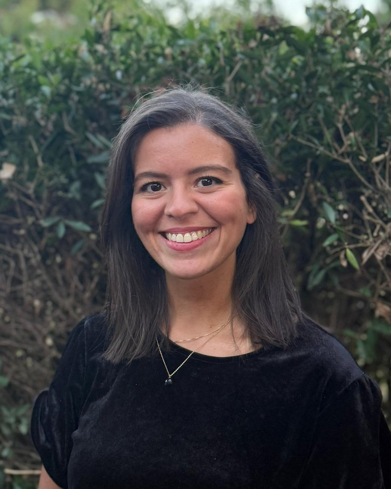

Prendre soin de votre vitalité, de votre bien-être et de votre équilibre.
Naturopathe à Neuilly-sur-Seine, je vous accompagne pour trouver ou retrouver un équilibre de santé au quotidien : énergie, sommeil, digestion, stress, activité physique, gestion de la fatigue. Consultations le samedi, à compter de janvier 2027.
Prendre rendez-vous
Qui suis-je ?
Je suis Inès Djili, naturopathe à Neuilly-sur-Seine. Je vous accompagne sur le chemin de votre équilibre, avec une spécialisation sur la fatigue.
Ce qui m'a menée à la naturopathie, c'est d'abord un intérêt intellectuel pour le fonctionnement du corps humain. C'est aussi une expérience personnelle : plusieurs maux du quotidien que j'ai réussi à apaiser en agissant sur des leviers comme l'alimentation, le sommeil, l'activité physique ou la gestion du stress.
C'est ce qui m'a conduite à me former de 2021 à 2025 à l'Institut supérieur de naturopathie (ISUPNAT), une formation certifiée FENA. Je suis titulaire d'un bachelor en naturopathie délivré par la FEDE.
Pourquoi consulter ?
Fatigue
Une fatigue qui s'installe et que le repos ne suffit plus à effacer.
Sommeil
Des nuits trop courtes, agitées ou qui ne reposent pas vraiment.
Digestion
Ballonnements, inconfort, un ventre qui réagit à tout, malgré tout ce que vous avez déjà essayé.
Alimentation
L'envie de mieux manger sans régime, des fringales, des coups de barre après les repas.
Concentration et brouillard mental
La tête qui ne suit plus : du mal à vous concentrer, l'impression de penser à travers un brouillard.
Stress et charge mentale
Le sentiment de tourner à plein régime sans jamais redescendre. Ou au contraire le trop-plein et l'impression de ne plus rien pouvoir gérer.
Peau réactive
Dans beaucoup de cas, la peau reflète des déséquilibres intérieurs. Je vous aide à comprendre lesquels.
Déséquilibres féminins
Un cycle inconfortable, douloureux, irrégulier ou que vous ne comprenez pas, des variations hormonales qui pèsent sur le quotidien. À chaque étape de la vie : puberté, désir de grossesse, après une naissance, périménopause et ménopause.
Prévention
Faire le point sur votre hygiène de vie, sans attendre que votre corps ne vous le fasse savoir.
Cette liste n'est pas exhaustive : n'hésitez pas à me contacter pour toute autre demande.
Une approche globale
En naturopathie, on ne regarde pas un inconfort isolément. Sommeil, alimentation, activité physique, digestion, rythme de vie, émotions : tout se tient. Nous cherchons à comprendre ce qui, dans votre terrain, a besoin d'être soutenu plutôt que de masquer ce qui se manifeste.
Le naturopathe est avant tout un éducateur de santé. Notre échange est construit sur la pédagogie avec le souhait que vous quittiez mon cabinet en ayant une meilleure compréhension des mécanismes de votre corps et de la physiologie sous-jacente.
Ensemble, nous faisons le point sur votre quotidien pour identifier les leviers suffisamment impactants pour atteindre l'objectif : des changements réalistes, adaptés à votre vie, qui tiennent dans la durée et qui vous font vraiment du bien.
Un accompagnement spécialisé sur la fatigue
La vie et mon parcours personnel m'ont amenée à beaucoup étudier la fatigue. C'est pourquoi je propose aujourd'hui un accompagnement spécialisé sur ce sujet, auquel j'ai aussi consacré mon mémoire de fin de formation.
La fatigue est un symptôme aux dizaines de causes possibles. Elle s'exprime aussi très différemment chez chacun d'entre nous. C'est pour cette raison qu'elle demande une approche très individualisée.
- Vous ne vous souvenez plus de la dernière fois où vous vous êtes senti en forme.
- Le réveil sonne et la journée paraît déjà trop longue.
- Les week-ends servent à récupérer, plus vraiment à vivre.
- Vous êtes épuisé le soir, mais incapable de vous endormir.
- Le moindre imprévu vous paraît insurmontable.
- Vous êtes entré en mode survie sans plus jamais en ressortir.
Comment ça se passe
Le bilan de vitalité
Un premier rendez-vous pour comprendre votre demande, votre rythme et votre histoire. Je prends le temps d'écouter et de questionner avant de proposer quoi que ce soit.
Votre protocole d'hygiène de vie
Vous repartez avec un protocole écrit et personnalisé, avec des priorités claires plutôt qu'une liste de tout ce qu'il faudrait changer.
Le suivi
Quelques semaines ou quelques mois plus tard, on fait le point : ce qui fonctionne, ce qui coince et comment avancer à votre rythme.
- Durée
- 1 h 30 pour le bilan
1 h pour un suivi - Lieu
- Neuilly-sur-Seine
- Quand
- Le samedi
- Langues
- Français ou anglais
Questions fréquentes
Qu'est-ce que la naturopathie ?
La naturopathie est une approche d'hygiène de vie. Elle s'intéresse à la personne dans sa globalité et cherche à soutenir les capacités d'équilibre de l'organisme en agissant sur le quotidien : l'alimentation, le sommeil, l'activité physique, la gestion du stress ou encore la digestion.
À qui s'adresse la naturopathie ?
À toute personne qui ressent un inconfort persistant sans trouver de réponse satisfaisante, qui traverse une période de vie qui la bouscule ou qui souhaite simplement prendre soin d'elle en prévention. On peut également venir pour mieux comprendre son corps et ajuster ses habitudes. En résumé, la naturopathie s'adresse à tous : hommes et femmes, à tout âge.
Est-ce qu'une séance de naturopathie remplace un suivi médical ?
Non. La naturopathie peut venir en complément d'un suivi médical, jamais à sa place.
Les séances peuvent-elles se faire en visio ?
Non. Le bilan et les suivis se font au cabinet, en présentiel.
Les séances de naturopathie sont-elles remboursées ?
Certaines mutuelles prennent en charge une partie des consultations de naturopathie. Renseignez-vous auprès de la vôtre ; une facture vous est remise à chaque séance.
Prendre rendez-vous
Les consultations ont lieu le samedi à Neuilly-sur-Seine, à partir de janvier 2027.
Une question avant de réserver ? inesd.naturopathie@gmail.com
Mentions légales
Éditrice du site
Inès Djili, entrepreneure individuelle. SIREN : 108 572 512. Email : inesd.naturopathie@gmail.com.
Hébergement
GitHub, Inc., 88 Colin P. Kelly Jr. Street, San Francisco, CA 94107, États-Unis.
Activité
La naturopathie ne se substitue ni à un diagnostic ni à un traitement médical. Les conseils donnés relèvent de l'hygiène de vie.
Politique de confidentialité
Les informations transmises lors de la prise de rendez-vous (nom, email, téléphone) servent uniquement à organiser les consultations et à vous recontacter. Elles ne sont ni vendues ni transmises à des tiers. Ce qui est partagé en consultation reste confidentiel. Ces données sont conservées pendant la durée de l'accompagnement puis [durée]. Vous pouvez demander à y accéder, à les corriger ou à les supprimer en écrivant à inesd.naturopathie@gmail.com.